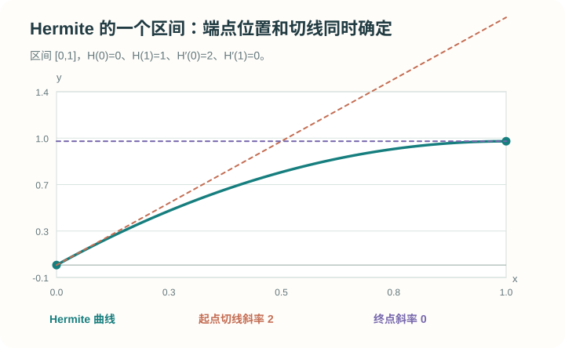
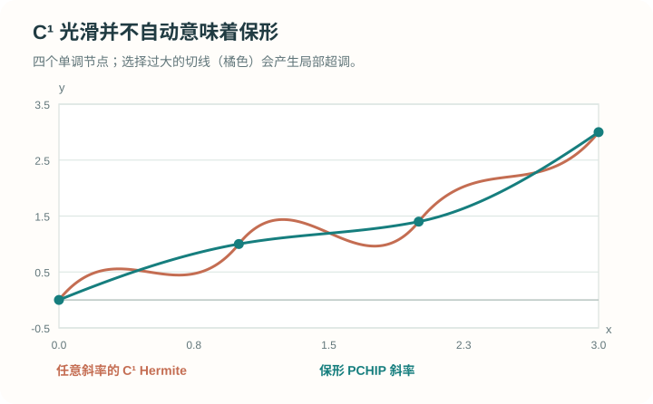

CHAPTER 05 · NUMERICAL ANALYSIS
Hermite 插值、分段曲线与 PCHIP
只有端点位置还不够，怎样同时控制曲线切线并避免虚假的峰值？从 Hermite 四基函数走向保形分段插值。
01 · 只有位置相同，轨迹就会平滑吗？
动画角色通过同样的两个位置，可以沿不同方向进入和离开。若曲线只满足位置条件，区间连接处可能出现折角。实际轨迹还需要控制一阶导数——速度或几何切线，才能保证连接处的方向连续。
一个三次多项式有四个系数，两个端点的位置与两个端点的斜率正好给出四条独立约束。Hermite 插值就是在满足这些约束的前提下构造曲线。若有许多节点，可以使用全局高次 Hermite 多项式，但分段低次形式更适合局部交互和工程使用。
02 · 四个三次基函数对应四条约束
给定区间 [x₀,x₁]，长度 h=x₁−x₀>0，局部变量 t=(x−x₀)/h∈[0,1]。端点函数值是 y₀,y₁，关于实际坐标 x 的导数是 m₀,m₁。一个区间上的 Hermite 多项式为：
四个基函数分别是 h₀₀=2t³−3t²+1、h₁₀=t³−2t²+t、h₀₁=−2t³+3t²、h₁₁=t³−t²。斜率项前的 h 不可遗漏：导数相对于 x 给出，局部基函数却是关于 t 的函数。

03 · C⁰、C¹、C² 分别约束了什么？
分段曲线的相邻区间在节点处拥有相同函数值，称为 C⁰ 连续。如果还共用相同的一阶导数，则是 C¹ 连续。如果二阶导数也连续，则是 C² 连续。
任意选择一组节点导数并在相邻区间共享它们，可构造 C¹ 的分段三次 Hermite 曲线；但二阶导数通常跳变。三次样条在合适边界条件下可以达到 C²，使用的仍是三次多项式，因此光滑性的差别不等于多项式次数的差别。
对于所有节点均给定函数值与一阶导数的全局 Hermite 问题，若有 n+1 个互异节点，则有唯一的次数不超过 2n+1 的插值多项式。但次数随节点数增加，往往不如局部三次段便于控制。
04 · C¹ 光滑为什么还会产生假的峰值？
数据单调递增时，人们可能希望曲线在每个区间保持单调。可是连续一阶导数只限制切线在连接处一致；若人为选取过大的节点斜率，三次曲线仍可能在节点之间超出原始数据的范围。

PCHIP（Piecewise Cubic Hermite Interpolating Polynomial）是采用特定导数规则的分段三次 Hermite 方法。设相邻区间长度为 hₖ₋₁,hₖ，相邻割线斜率为 dₖ₋₁,dₖ。若它们异号或某个为零，内部节点导数取零；若同号则采用加权调和平均：
其中 w₁=2hₖ+hₖ₋₁、w₂=hₖ+2hₖ₋₁。端点由单侧估计与限制规则确定，而非直接照搬内部公式。PCHIP 对单调输入保持单调、不产生过冲，但一般只保证 C¹，二阶导数可能在节点处分段跳变。
05 · 可运行的四基函数与严格适用条件
下面只实现单个区间的三次 Hermite，并不声称这是完整 PCHIP。多节点 PCHIP 还需要内部斜率、端点估计和分段区间查找；可通过 SciPy 官方实现。
def hermite(x0,x1,y0,y1,m0,m1,x):
h=x1-x0
assert h>0
t=(x-x0)/h
return ((2*t**3-3*t**2+1)*y0
+(t**3-2*t**2+t)*h*m0
+(-2*t**3+3*t**2)*y1
+(t**3-t**2)*h*m1)
assert abs(hermite(0,1,0,1,2,0,0)-0)<1e-12
assert abs(hermite(0,1,0,1,2,0,1)-1)<1e-12
# 可选依赖: pip install scipy
# from scipy.interpolate import PchipInterpolator
# p = PchipInterpolator([0,1,2,3],[0,1,1.4,3])
# print(p(1.5))不要笼统声称 PCHIP 在任意数据上均具有四阶精度；误差阶需要明确函数光滑性、采样网格、节点导数估计等条件。对有尖点或不连续导数的数据，优先保形与优先高阶逼近会产生不同的工程取舍。
原始资料与延伸阅读
以下资料用于核对定理适用条件、稳定计算形式和库函数行为。本页的图解与算例均独立构造。
- SciPy 官方文档：PchipInterpolator。PCHIP 导数选取、C¹ 性质、单调保形与超调限制。
- Jean-Paul Berrut & Lloyd N. Trefethen, Barycentric Lagrange Interpolation。SIAM Review 46(3), 2004，重心插值形式与数值计算。